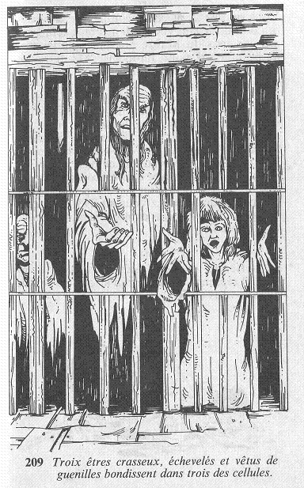

La pièce doit être une espèce de cachot car, le long d'un mur, sont alignées quatre cellules dotées de forts barreaux de fer. Il semble qu'il n'y ait personne du côté où vous vous trouvez, aussi faites-vous quelques pas à l'intérieur de la pièce. Alors que vous avancez, une petite branche craque sous vos pieds, et trois êtres crasseux, échevelés, et vêtus de guenilles, bondissent dans trois des cellules.  Ils se précipitent vers les barreaux en vous suppliant de les délivrer. En gémissant, ils vous disent qu'ils ont été capturés par les créatures du Comte de Brume et emprisonnés en attendant quelque horrible destin. Dans la cellule la plus proche de vous se tient une jeune fille ; son visage et ses cheveux sont d'une saleté repoussante et elle est en larmes. Dans la seconde cellule est emprisonné un homme de grande taille au visage buriné. Il a accepté sa mort, mais vous demande de mettre fin à ses jours sur-le-champ, afin de priver le Comte de Brume de ce plaisir. Dans la troisième cellule se tient un homme chauve revêtu d'une robe de bure. Il reste silencieux. Désirez-vous porter secours à ces prisonniers ? Dans ce cas, vous pouvez adresser la parole à la jeune fille , à l'homme de grande taille, ou à l'homme chauve. Mais vous pouvez choisir aussi de ne pas leur parler. Vous quittez alors cette pièce.